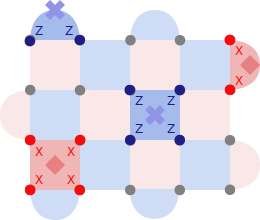

Tutorial - Estimating the Surface Code Threshold#
In this notebook, we will estimate the threshold of the Surface Code, for a simple phenomenological circuit-noise model.
Python Dependencies#
To run the Jupyter Notebook locally, you’ll need the following dependencies:
stim~=1.14
numpy~=1.0 # require for PyMatching
scipy
pymatching
matplotlib
If not already installed in your environmnet you can install them with
pip install stim~=1.14 numpy~=1.0 scipy pymatching matplotlib
The Surface Code#
As discussed in the lecture, the Surface Code is a stabilizer code with code distance \(d\), \(d^2\) data qubits, and \(d^2-1\) syndrome measurement qubits, embedded in a 2D-plane.
The stabilizers of the code have weight 4 (interior) or 2 (boundary) depending on their location on the surface. In the picture below, a distance \(d=5\) Surface Code is shown. The red squares depict the \(X\)-type stabilizers, and the blue squares depict the \(Z\)-type stabilizers.

Source: https://errorcorrectionzoo.org/c/rotated_surface
To measure the syndromes, the code requires only local operation between neighboring qubits since each syndrome qubit measures only its neighboring data qubits.
Surface Code Circuit in Stim#
We will use the stabilizer simulator Stim to simulate the circuit code execution and the circuit noise.
Stim allows us to load a set of pre-defined quantum circuits for well-known quantum error correction codes such as the Surface Code.
We’ll start by generating a distance \(d=3\) Surface Code quantum circuits with 3 rounds of syndrome measurements.
import stim
circuit = stim.Circuit.generated("surface_code:rotated_memory_x", rounds=2, distance=3)
circuit.diagram("timeline-svg")
For \(d=3\), we expect the circuit to have 9 data qubits and 8 ancilla qubits to measure the stabilizers, so a total of 15 qubits. The cirucit generated above contains a few idle wires (corresponding to unused qubits).
A better way to see which qubits are actually utilized is to print a timeslice diagram of the circuit. A timeslice diagram depicts the parts of the circuit executed between two TICK operations.
stim automatically injects TICK operations so that we can easily follow the code circuit execution.
circuit.diagram("timeslice-svg")
We can see that in each round of syndrome measurement, 4 blocks of parallel CNOT gates are applied. In each block, 6 CNOTs are executed - 4 for the stabilizers in the interior of the surface and 2 for the stabilizers at the boundary measuring 2 data qubits.
Note: The CNOT gates are executed in a specific order to avoid hook errors, which would spread low-weight Pauli errors, to higher weight Pauli errors, making fault-tolerant operations impossible!
After each round, the ancillas are measured, extracting the stabilizer Eigenvalues, followed by a reset operation to re-use them for the next round of error detection.
Circuit Metadata#
In the circuit above, we can see two other annotations, besides the TICK operation, which do not correspond to quantum gates operating on the qubits.
The first 16 instructions of the circuit use the QUBIT_COORDS(x, y) qubit_index annotation to provide Stim information about the qubit’s location in space. This information is utilized by various tools to visualize the circuit execution such as the timeslice visualizer.
circuit[0:17]
The second annotiation is the DETECTOR annotation which is discussed in the next section.
Detectors#
We can see that Stim appended to the end of each QEC cycle a bunch of DETECTOR statements.
A detector is a parity check, based on a set of measurements in the measurement record denoted as rec. Under noiseless execution, the parity of the detector should never change.
The latest measurement in the measurement recored is accessible through rec[-1].
Each DETECTOR can be assigned a location in space-time via a triplet of coordinates (\(x,y,z\)), which can later be used to display a space-time graph.
If we print the instructions for the first QEC cycle, we see that 4 detectors have been added. Those are used for the \(Z\)-type stabilizer parity checks, detecting Pauli-\(X\) errors.
# Instructions for the first QEC cycle
circuit[17:37]
What about the \(X\)-type stabilizers?
Since at the beginning of the circuit we prepared our qubits in the \(\ket{1}\) state, they are already Eigenvectors of all \(Z\)-type stabilizers resulting in a deterministic measurement (\(Z\)-type stabilizers have an even amount of Pauli-\(Z\) operators cancelling out the phase-flip of \(-1\) for single physical qubits).
Example: \(ZZZZ\ket{1}\ket{1}\ket{1}\ket{1} = (-1)^4 \ket{1}\ket{1}\ket{1}\ket{1} = \ket{1}\ket{1}\ket{1}\ket{1}\)
For the \(X\)-type stabilizers, we require an initial measurement round projecting them randomly onto one of the 2 Eigenspaces \(+1\)/\(-1\). Subsequent measurements, in the absence of noise, should always yield the same Eigenvalues when measuring the stabilizers.
Therefore, we can add additional DETECTOR statements for the \(X\)-type stabilizers after the second round of measurements as shown below:
circuit[37:60]
In the second round, we bitwise XOR the measurement results of the first round, with the measurements of the second round.
This way, DETECTOR events inform the decoder about changes in the syndromes in the presence of noise.
Note: The SHIFT_COORDS instruction can be used to shift the \(z\)-index (time) by 1, which allows us to to reuse the same detector coordinates in every QEC cycle.
Final Measurement Round#
At the end of the circuit, all physical data qubits are measured destructively in the \(X\)-basis, and detectors computing \(Z\)-type stabilizer parities are defined.
Finally, we define the logical observable measurement as the parity of physical qubits \(1\), \(8\), and \(15\), corresponding to a logical \(X_L\) measurement.
circuit[60::]
Detectors in the Absence of Noise#
Without any noise in the circuit, our detectors and the logical observable should always measure the same parities.
We can put this to the test by, compiling a sampler which will simulate the circuit and collect detector events.
# Define a detector sampler
sampler = circuit.compile_detector_sampler()
# Sample detection events and logical observable
shots = 10
detection_events, observable_flips = sampler.sample(shots, separate_observables=True)
Below we can see that the detection events never change parity
print(detection_events)
The same applies to the observable
print(observable_flips)
Noisy Surface Code Circuits#
Now, that we understand how the Surface Code circuit looks like and how detectors behave, we can explore what happens when noise is added to the mix.
Stim doesn’t support a noise model, like the ones Qiskit or Cirq support, but we can easily generate the same Surface Code circuit with noisy gates injected.
noisy_circuit = stim.Circuit.generated(
"surface_code:rotated_memory_x",
rounds=2,
distance=3,
after_clifford_depolarization=0.001,
after_reset_flip_probability=0.001,
before_measure_flip_probability=0.001,
before_round_data_depolarization=0.001,
)
The cirucit contains now noise operations, simulating qubit reset, measurement and gate errors.
noisy_circuit.diagram("timeline-svg")
With the noise, we observe for the first time logical errors after measuring the logical observable
import numpy as np
shots = 10_000
sampler = noisy_circuit.compile_detector_sampler()
detection_events, observable_flips = sampler.sample(shots, separate_observables=True)
print(
f"Success rate after 1 QEC cycle: {(1 - (np.sum(observable_flips) / shots)) * 100} %"
)
We also observe detection events in the measured data, indicating the presence of errors:
detection_events[0:10]
The Detector Error Model (DEM)#
Our goal is to decode the Surface Code. In this section, we introduce a useful abstraction, called the detector error model (DEM) which we will use for decoding.
Given a set of measurement parities, defined through detectors and logical observables in the circuit, the detector error model informs the decoder with which probability any of the checks fails due to an error.
For our noisy Surface Code circuit, we can compile a detector model and print the DEM model representation
dem = noisy_circuit.detector_error_model()
print(repr(dem))
The first instruction
error(0.00193118) D0 D2
tells us, that there is some error mechanism in our circuit, that occurs with probability \(0.00193118\) and that will flip the parities of both detectors D0 and D2, defined as
detector(2, 0, 0) D0
detector(4, 2, 0) D2
in our Surface Code circuit. As a reminder: Detectors are directly associated with stabilizer measurements. This means, that the error probability tells us with which probability a stabilizer measurement will fail given the circuit-level noise model.
Example: DEM for Repetition Code#
Since our noisy Surface Code has many source of errors, retracing the source of error probabilities in the DEM is not a simple task.
Instead, let’s continue our analysis for the \(X\)-flip repetition code:
repetition_circuit = stim.Circuit("""
X_ERROR(0.1) 0 1 2
CNOT 0 3 1 3 1 4 2 4
MR 3 4
DETECTOR(0,0,0) rec[-1]
DETECTOR(0,0,0) rec[-2]
""")
repetition_circuit.diagram("timeline-svg")
The corresponding DEM has the following form
dem = repetition_circuit.detector_error_model()
print(repr(dem))
Unsurprisingly, there are three possible errors affecting our detectors. Since both detectors measure the second qubit they will be flipped with probability \(0.1\):
error(0.1) D0 D1
Adding Pauli-\(Z\) errors to our circuit does not affect the DEM as the repetition code cannot detect them:
repetition_circuit = stim.Circuit("""
X_ERROR(0.1) 0 1 2
Z_ERROR(0.1) 0 1 2
CNOT 0 3 1 3 1 4 2 4
MR 3 4
DETECTOR(0,0,0) rec[-1]
DETECTOR(0,0,0) rec[-2]
""")
dem = repetition_circuit.detector_error_model()
print(repr(dem))
Replacing the Pauli-\(X\) and Pauli-\(Z\) errors by depolarizing noise, results in the following DEM:
repetition_circuit = stim.Circuit("""
DEPOLARIZE1(0.1) 0 1 2
CNOT 0 3 1 3 1 4 2 4
MR 3 4
DETECTOR(0,0,0) rec[-1]
DETECTOR(0,0,0) rec[-2]
""")
dem = repetition_circuit.detector_error_model()
print(repr(dem))
For depolarizing noise with probability \(p\), Stim applies a given Pauli gate with probability:
\(I\): \((1-p)\)
\(X\): \(\frac{p}{3}\)
\(Y\): \(\frac{p}{3}\)
\(Z\): \(\frac{p}{3}\)
Therefore, we have a probability of \(\frac{2p}{3}\) that our detectors are flipped as we only need to take into account Pauli-\(X\) and Pauli-\(Y\) errors.
DEM model and the Tanner Graph#
The detector errror model represents a weighted graph, where the nodes are parity checks and the weights represent independent error probabilities affecting the checks.
This representation is very natural for decoders operating on a Tanner graph such as the Minimum-Weight Perfect Matching decoder introduced in the lecture.
To further emphasize the relationship, we can visualize the DEM of a larger repetition code using Stim:
circuit = stim.Circuit.generated(
"repetition_code:memory",
rounds=25,
distance=9,
before_round_data_depolarization=0.04,
before_measure_flip_probability=0.01,
)
circuit.diagram("timeline-svg")
dem = circuit.detector_error_model()
dem.diagram("matchgraph-svg")
The matching graph is a 2D space-time graph. The \(x\)-axis represents space and the \(y\)-axis time.
At each time step, we count 8 vertices, representing the 8 detectors. Furthermore, we have two invisible boundary nodes, for matching errors on the outer qubits, which are only measured by a single detector.
For analyzing the Surface Code DEM, it is usually simpler to print the graph in 3D
Exercise 1: Test different error mechanisms and see how they affect the connectivity in the DEM graph.
noisy_circuit = stim.Circuit.generated(
"surface_code:rotated_memory_x",
rounds=25,
distance=3,
# before_round_data_depolarization=0.001,
after_reset_flip_probability=0.001,
before_measure_flip_probability=0.001,
)
dem = noisy_circuit.detector_error_model()
dem.diagram("matchgraph-3d")
DEM model for Decoder Research and Reproducibility#
Besides being a powerful abstraction, a DEM model is also very useful for sharing noise models.
DEM model errors can be measured on a real device and loaded into Stim, making Stim a powerful tool for evaluating decoders even without access to actual hardware.
DEM models for Google’s recent paper: Quantum Error Correction Below the Surface Code Threshold can be found on Zenodo
Decoding Errors: Minimum-Weight Perfect Matching#
Given a DEM model, it is straightforward to feed the graph and detector events to a minimum-weight perfect matching decoder.
In this tutorial, we are going to use a MWPM implementation called PyMatching, developed by Oscar Higgots.
We’ll begin by instantiating a noisy repetition circuit in Stim:
# Instantiate noisy repetition code
noisy_repetition_circuit = stim.Circuit.generated(
"repetition_code:memory",
rounds=25,
distance=9,
before_round_data_depolarization=0.04,
before_measure_flip_probability=0.01,
)
# Instantiate a sampler to sample detector events
sampler = circuit.compile_detector_sampler()
# Sample detection events and observable flips
num_shots = 10_000
detection_events, observable_flips = sampler.sample(num_shots, separate_observables=True)
print(
f"Success rate after 25 QEC cycles: "
f"{(1 - (np.sum(observable_flips) / num_shots)) * 100} %"
)
Next, we import PyMatching and use its bindings to construct a graph from our DEM and return predictions given detection events.
import pymatching
# generate DEM for noisy circuit
detector_error_model = noisy_repetition_circuit.detector_error_model(
decompose_errors=True
)
# Istantiate MWPM decoder
matcher = pymatching.Matching.from_detector_error_model(detector_error_model)
We can print some metadata about the decoder
print("Number of detectors:", matcher.num_detectors)
print("Number of nodes:", matcher.num_nodes)
print("Number of edges: ", matcher.num_edges)
Now, we are ready to decode our sampled data!
predictions = matcher.decode_batch(detection_events)
# print(predictions)
Finally, we need to count the decoding mistakes
# Count the mistakes.
num_errors = 0
for shot in range(shots):
actual_for_shot = observable_flips[shot]
predicted_for_shot = predictions[shot]
if not np.array_equal(actual_for_shot, predicted_for_shot):
num_errors += 1
print(f"Number of errors for {num_shots} shots: {num_errors}")
Estimating the Repetition Code Threshold#
In order to calculate the threshold of a code for a fixed noise model and decoder, we need to evaluate the decoder at different code distances \(d\) and noise-levels \(p\).
We start by writing a function that automates the steps we performed above:
def count_logical_errors(circuit: stim.Circuit, num_shots: int) -> int:
# Sample the circuit.
sampler = circuit.compile_detector_sampler()
detection_events, observable_flips = sampler.sample(
num_shots, separate_observables=True
)
# Configure a decoder using the circuit.
detector_error_model = circuit.detector_error_model(decompose_errors=True)
matcher = pymatching.Matching.from_detector_error_model(detector_error_model)
# Run the decoder.
predictions = matcher.decode_batch(detection_events)
# Count the mistakes.
num_errors = 0
for shot in range(num_shots):
actual_for_shot = observable_flips[shot]
predicted_for_shot = predictions[shot]
if not np.array_equal(actual_for_shot, predicted_for_shot):
num_errors += 1
return num_errors
The function returns the number of logical errors for num_shots. From that, we can compute the logical error rate (LER) per shot needed for our threshold evaluation.
Next, let’s run our threshold estimation for our repetition code:
import matplotlib.pyplot as plt
results = []
num_shots = 10_000
for d in [3, 5, 7]:
print("--- Code distance:", d)
xs = []
ys = []
for noise in [0.1, 0.2, 0.3, 0.4, 0.5]:
circuit = stim.Circuit.generated(
"repetition_code:memory",
rounds=d * 3,
distance=d,
before_round_data_depolarization=noise,
)
num_errors_sampled = count_logical_errors(circuit, num_shots)
print(f"Decoding errors at noise level {noise}: {num_errors_sampled}")
xs.append(noise)
ys.append(num_errors_sampled / num_shots)
results.append((d, [xs, ys]))
plt.plot(xs, ys, label="d=" + str(d))
plt.loglog()
plt.xlabel("physical error rate")
plt.ylabel("logical error rate per shot")
plt.legend()
plt.show()
The results look very promising. Based on our simulation, the threshold for the repetition code is around \(p=0.4\)!
For physical noise levels \(\le p\) we observe a significant decrease of the LER, consistent with the threshold theorem.
Unfortunately, the repetition code is not as good as the graph might indicate!
There are several problems with our result:
The repetition code doesn’t consider \(Z\)-type errors
We didn’t introduce any reset or measurement errors
Our noise model is missing important error processes such as for example leakage, where the qubit escapes its computational subspace and leaks to higher energy states such as \(\ket{2}, \ket{3}, ...\).
Nevertheless, we were able to estimate the code threshold with a few lines of code, demonstrating the usefulness of Stim :-)
Next, we are going to evaluate the Surface Code under a slightly more realistic noise model to get an idea of the threshold value of a real quantum code.
Exercise: Estimating the Threshold of the Surface Code#
Exercise 2: Re-use the code for the repetition code to evaluate the Surface Code threshold. This time introduce reset and measurement errors as well depolarizing errors before the QEC cycles.
Tip 1: The threshold for the Surface Code is significantly lower than the one for the repetition code. Use a noise range between \([0.002, 0.009]\) to find the threshold.
Tip 2: Observe the number of shots needed to sample a logical error and adjust the number of shots accordingly
Exercise 3: The error suppression factor \(\Lambda = \frac{\varepsilon_d}{\varepsilon_{d+2}}\) is an important metric to see if our code effectively suppresses the error.
The LER is denoted as \(\varepsilon_d\), at a fixed code distance \(d\) and physical error rate \(p\).
Calculate \(\Lambda\) at \(p=2 \times 10^{-3}\) and compare it to the theoretical estimate \(p_{thr}/p\).
Tip: You can use the results list object for your calculations.
References#
To learn more about Stim:
Read the
Getting Started Tutorialwhich forms the basis for this notebook.Check out the paper
Stim: A fast stabilizer circuit simulatorto learn about Stim’s internals and how it is leveraging SIMD instructions to squeeze the maximum performance out of our CPUs.
To learn more about the Surface Code:
Paper introducing the surface code and logical gates by Fowler et al.
Google’s Surface Code experiment:
Quantum error correction below the surface code thresholdcontains a lot of details about different noise simulation techniques and other decoder types.
To learn more about QEC codes, visit the QEC Zoo: https://errorcorrectionzoo.org/ !